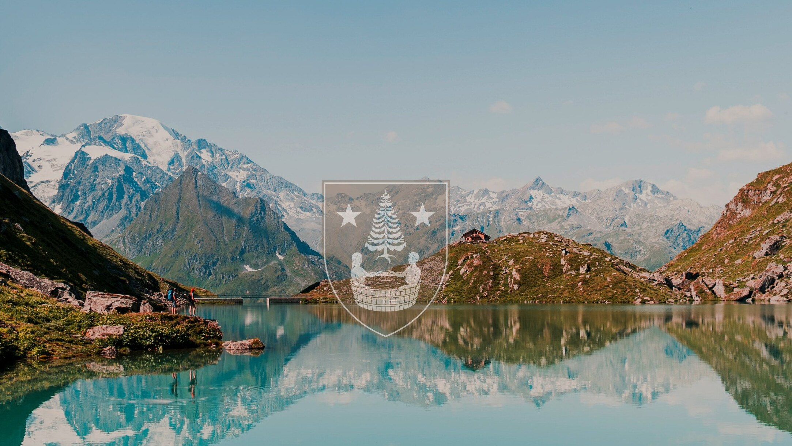
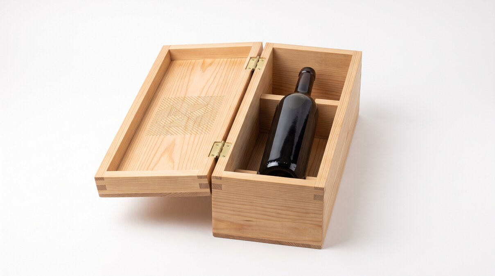
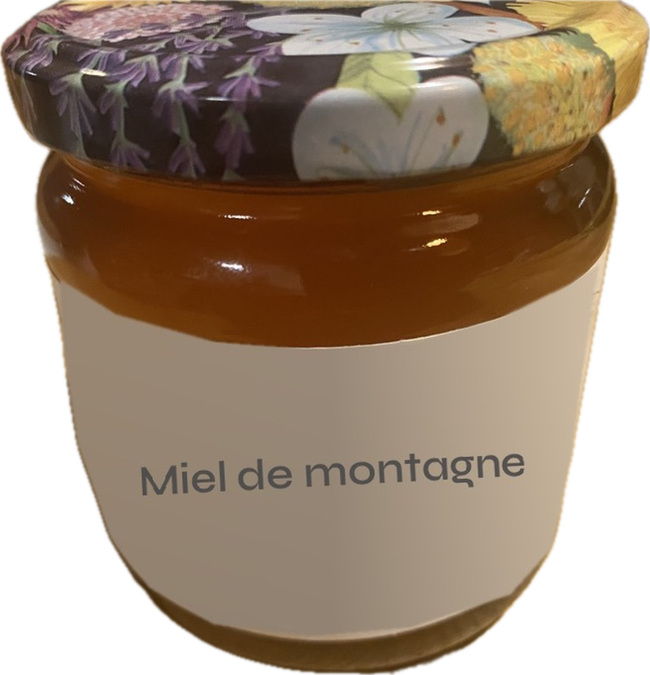
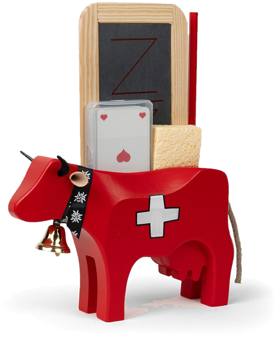
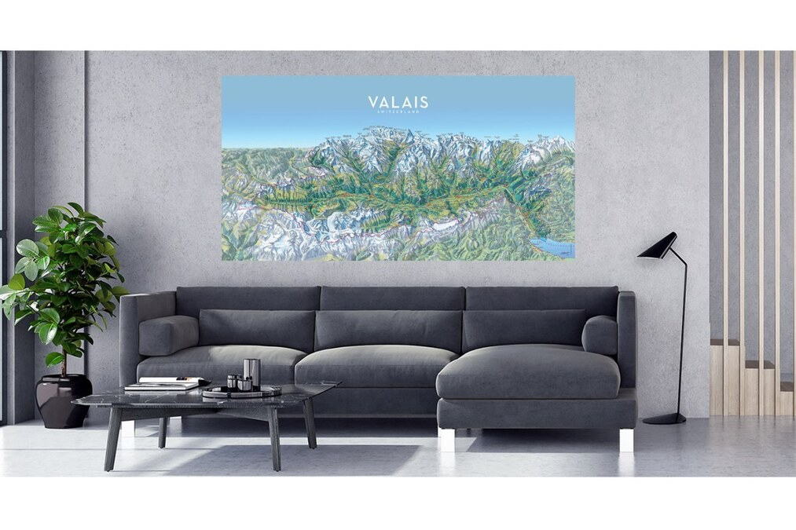
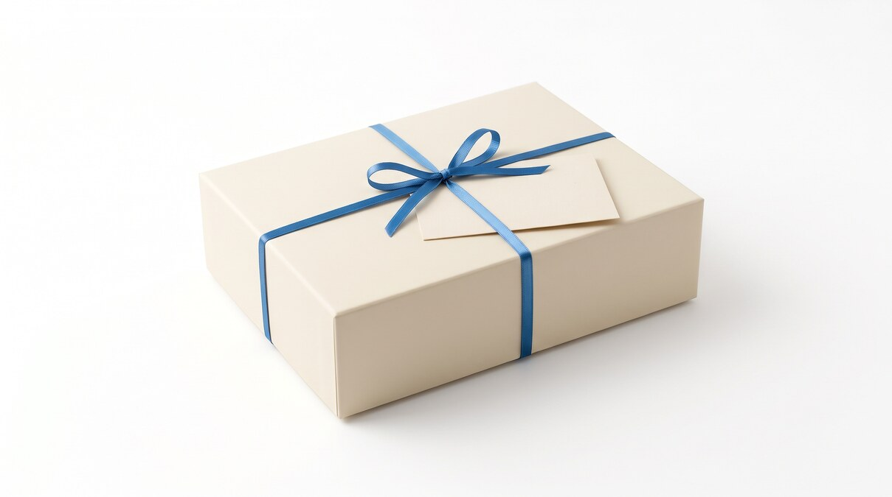
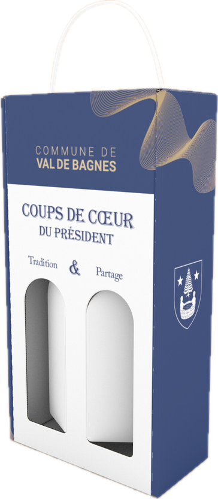

Propositions d'articles à vos couleurs
Des objets choisis pour durer, pensés pour la présidence, le personnel et le public.
Voir les propositionsLes propositions
Pour le personnel 9 articles et 2 concepts
Des objets du quotidien, utilisés chaque jour par le personnel communal.
Pour le public 8 articles
Des souvenirs et des articles à découvrir au shop, pour le public.
Pour la présidence 6 articles
Des cadeaux de représentation, remis au nom de la commune.
Volet VIP
Concepts d'exception, présentés sans prix. Deux pièces déjà réalisées figurent parmi eux : le jeu de jass et le tirage de la carte de la vallée.

Visuel d'intentionCoffret mélèze autour de la bouteille du président
concept, sans quantité

Miel de la ruche communale
concept, sans quantité

Jeu de jass en bois
concept, sans quantité

Tirage de la carte de la vallée
Pièce existante : carte de la vallée et de ses barrages, tirée sur support rigide (visuel : exemple de tirage).
concept, sans quantité

Visuel d'intentionEmballage du cadeau avec mot de la présidence
Concept : un emballage dédié, au budget distinct du produit, accompagné d'un mot de la présidence.
concept, sans quantité
Packaging et présentation

Une présentation soignée accompagne les articles de représentation : écrin, coffret ou carton aux couleurs de la commune. Le budget du packaging est distinct de celui des produits.
Mot de la présidence
Vitrine d'exposition
Une vitrine d'exposition est prévue à la réception de la commune pour présenter les articles.
Conditions et suite
- Les tarifs suivent dans l'offre, établie sur la base de votre sélection.
- Des échantillons physiques sont présentés systématiquement avant toute décision.
- Les délais sont confirmés à la commande.
Prochaine étape
- Choix d'une liste courte d'articles.
- Présentation des échantillons physiques.
- Offre ferme pour les articles retenus.